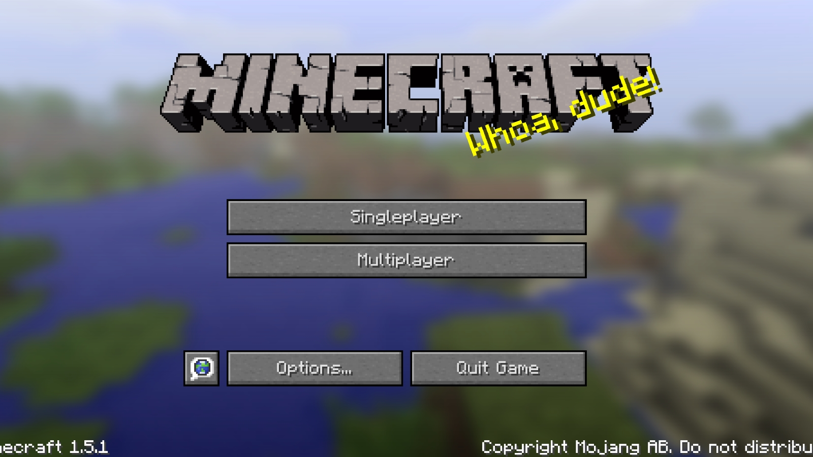
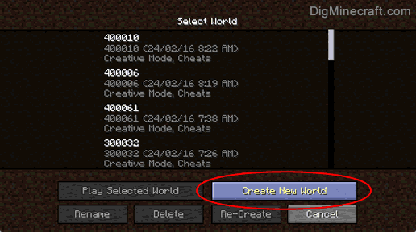
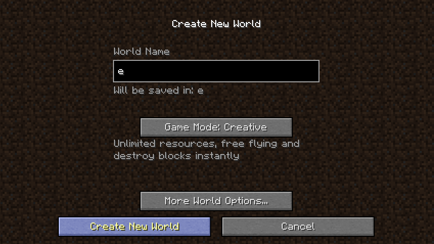

Először is, mihelyst beléptünk a játékba, a képernyőn láthatjuk, hogy a menübe vagyunk.
Ha új világot szeretnénk létrezhozni, kattintsunk az úgymond, Egyjátékos- angolul Singleplayer gombra.
Ha új világot szeretnénk létrezhozni, kattintsunk az úgymond, Egyjátékos- angolul Singleplayer gombra.
Miután ezt megtettünk, a képernyő jobb alsó sarkában láthatunk egy Create New World , azaz Új világ létrehozása gombot. Kattintsunk rá.
Mindezek után eljutunk a végső képernyőre, ahol megtudjuk adni a világunk nevét, és egyéb finomságokat. A "World Name", azaz "Világ neve" helyére bármit, de szó szerint bármit beírhatunk. Lejjebb tekintve láthatjuk az úgynevezett "Game Mode"-ot, magyarul a "Játékmód"-ot. Játékmódok lehetnek pl.:
Ha eldöntöttük milyen játékmódban szeretnénk játszani, kattintsunk a "Világ létrehozása" gombra.
